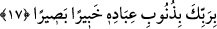

KİMSE BAŞKASININ
GÜNAHINI YÜKLENMEZ
15. “Kim hidâyete ererse kendisi için hidâyet bulmuş olur, kim de saparsa kendi
aleyhine sapmış olur. Hiçbir günahkar, başkasının günah yükünü taşımaz. Biz
peygamber göndermedikçe azâb edecek değiliz.”
16. Bir ülkeyi helâk etmek istediğimizde, o ülkenin zenginlik sebebiyle şımarmış
elebaşılarına (iyilikleri) emrederiz; buna rağmen onlar orada kötülük işlerler.
Böylece o ülke, helâke müstahak olur; biz de orayı darmadağın ederiz.
17. Nuh’tan sonraki nesillerden nicelerini helâk ettik. Kullarının günahlarını bilen
ve gören olarak Rabbin yeterlidir.
“Kim hidâyete ererse” doğru yolu bulur ve onda yürürse, yâni Kur’an hidâyeti ile
hidâyet bulup onun hükümleri ile amel eder ve yasaklarından kaçarsa “kendisi için
hidâyet bulmuş olur,” hidâyete ermesinin faydası kendisine âiddir, hidâyete ermeyen
başka birine ulaşacak değildir.
“Kim de” girdiği; erdiği hidâyet yolundan “saparsa kendi aleyhine sapmış olur,”
sapıklığın günahı ve sorumluluğu kendi aleyhinedir. Sapıtmayan başka birine âid olmaz.
Çünkü amelin sâhibinden ayrılması mümkün olmaz.
Beyzâvî der ki: O’nun hidâyeti âhirette başkasını kurtarmadığı gibi, dalâleti de
başkasını cehenneme yuvarlamaz. Ancak dünyada hidâyete ermenin faydası ve dalâlete
düşmenin zararı başkasına ulaşır. Nitekim Müftî Sa‘dî’nin Hâşiye’sinde böyle
geçmektedir.
“Hiçbir günahkar, başkasının günah yükünü taşımaz.” Yâni hiçbir günah yüklenen
nefis diğer bir nefsin günahını yüklenmez ki böylece ikinci nefsin günahından kurtulması
mümkün olsun ve amel ile sahibinin birbirinden ayrılmazlığı ortadan kalksın. Bilakis
herkes kendi günahını yüklenir ve hiç kimse başkasının günahı ile sorumlu tutulmaz. İşte
bu, “Her insanın amelini boynuna bağladık.” (el-İsrâ, 17/13) âyetini te’yid
etmektedir. “Kim iyi bir işe aracılık ederse onun da o işten bir nasibi olur. Kim kötü